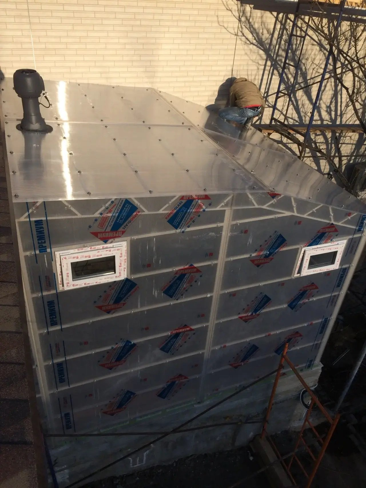

Досье / 02Отделка
Рабочее направление
Дом
начинается
с входа.
Собираем входные зоны, тамбуры, квартиры и коммерческие помещения от черновой подготовки до чистовой поверхности.
Смотреть архив ↗
02 Регистр работ
01Входные группыутепление / откосы / свет / покрытие—
02Квартиры и домастены / потолки / полы / покраска—
03Коммерческие помещенияподготовка / монтаж / финишные работы—
Материал и свет
Спокойная
поверхность.
Не маскируем черновые ошибки декором: сначала выравниваем основание, затем собираем финиш.
